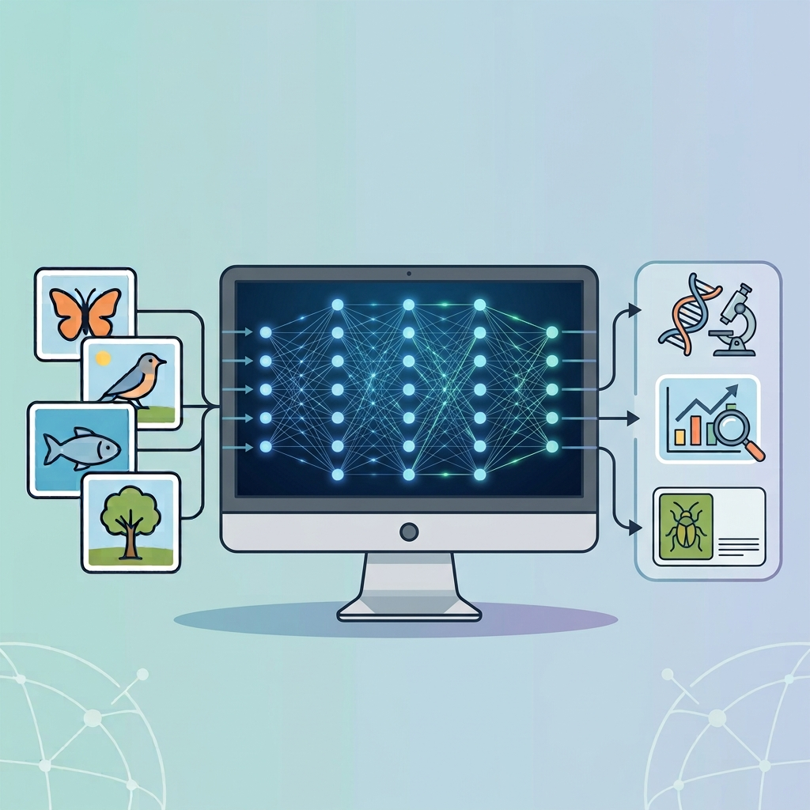

Turn biological questions into new discoveries through AI.
Explore Imageomics research, connect with interdisciplinary collaborators, and discover tools and methods that use artificial intelligence.
We are still building the new Imageomics Institute website.
In the meantime, explore our completed About, News, and Events sections.

Question
Answer
Every image of life contains clues about the world around us, from an animal’s physical traits and behavior to the ways species adapt and evolve. Imageomics uses artificial intelligence and biological knowledge to uncover those hidden patterns, turning images into new scientific discoveries.
Join our mission in this rapidly growing field at the intersection of biodiversity and artificial intelligence.
Join our missionFind your place to connect within the Imageomics community.
Explore Imageomics research, connect with interdisciplinary collaborators, and discover tools and methods that use artificial intelligence.
Search Imageomics code, datasets, models, demonstrations, and other open research products.
Start searching Imageomics guide GuideFollow Imageomics workflows, documentation, tutorials, and collaborative science practices.
Open the guideExplore predictions from a vision foundation model built to recognize and understand organisms across the tree of life.
Explore demo Imageomics GuideFind practical workflows, templates, documentation, and shared practices for collaborative Imageomics research.
Open the guide Cautious RobotDownload images from URLs in a CSV, organize and resize them, and verify the results without overwriting existing files.
View the tool